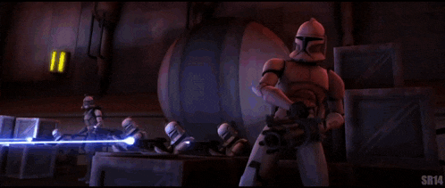
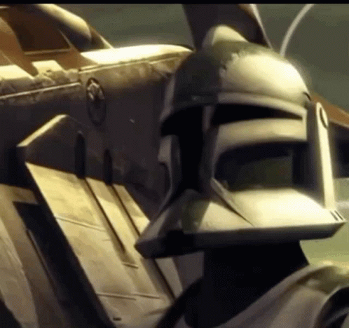

Регулярные
Формирования
Основные боевые подразделения Великой Армии Республики
125-й Пехотный Полк
125-й пехотный полк — это «кузница кадров» Великой Армии Республики. Он своеобразный «трамплин» для талантливых клонов, позволяющий им пройти обкатку в реальных, но менее опасных условиях, прежде чем попасть в пекло самых ожесточенных битв. Это формирование обеспечивает не только постоянный приток качественно подготовленных солдат в элитные части, но и надежно защищало критически важную инфраструктуру Республики.
Этот полк не был бы на слуху, как легионы, которыми командовали джедаи-знаменитости, но его вклад в общие военные усилия был бы неоценимым с системной точки зрения.

212-й Десантно-Штурмовой Батальон
212-й штурмовой легион — это «несокрушимый щит» Великой Армии Республики. Он заслужил репутацию «непоколебимого анакла» под командованием генерала Кеноби, специализируясь на обороне ключевых позиций и проведении осадных операций. Это формирование демонстрировало не только железную стойкость под шквальным огнем противника, но и образцовую воинскую дисциплину, действуя в идеальной координации со своим командиром-джедаем.
В отличие от более мобильных подразделений, 212-й прославился своей методичностью и способностью выдерживать самые ожесточенные атаки, превращая оборонительные позиции в неприступные крепости. Его вклад в кампании Республики был фундаментальным — там, где держал оборону 212-й, линии фронта оставались незыблемыми, обеспечивая успех всей военной операции.
41-й Элитный Корпус
41-й элитный легион — это «клинок особого назначения» Великой Армии Республики. Он заслужил репутацию элитного формирования, специализируясь на засекреченных операциях и точечном устранении целей высшего приоритета. Это формирование демонстрировало не только безупречное владение любым видом оружия, но и способность действовать в условиях абсолютной автономности, оставляя после себя лишь догадки и тишину.
В отличие от регулярных легионов, действовавших в составе крупных армий, 41-й работал малыми группами, решая задачи, о которых не знало даже большинство командиров. Его вклад в победу Республики был невидим, но фундаментален — там, где бессильны были целые армии, несколько солдат 41-го меняли расстановку сил одним точным ударом.

На дальних рубежах
501-й легион — это «кулак мести» Великой Армии Республики. Он стал легендарным «молотом» в руках генерала Скайуокера, всегда наносившим решающие удары по самым укреплённым позициям сепаратистов. Это подразделение демонстрировало не только высочайшую боевую эффективность в самых безнадёжных операциях, но и беспрецедентное боевое братство, сражаясь бок о бок со своим командиром-джедаем.
В отличие от многих других легионов, которые действовали строго по уставу, 501-й прославился своей тактической гибкостью и способностью действовать в условиях, где другие формирования были бы обречены на провал. Его вклад в победы Республики трудно переоценить — там, где появлялся 501-й, противник не имел шансов на успех.
104-й батальон — это «стальные волки» Великой Армии Республики. Он заслужил репутацию «универсального инструмента» в руках командования, специализируясь на быстрых рейдах и операциях в глубоком тылу противника. Это подразделение демонстрировало не только феноменальную мобильность и тактическую гибкость, но и исключительную самостоятельность при выполнении сложных боевых задач.
В отличие от крупных легионов, привязанных к линии фронта, 104-й действовал как самостоятельная боевая единица, нанося точечные удары по нервным узлам армии сепаратистов. Его вклад в общие военные усилия был тактическим мастерством высшего уровня — там, где появлялся 104-й, противник терял ключевые объекты и коммуникации, даже не видя лица нападавших.
327-й звездный корпус — это «небесный кулак» Великой Армии Республики. Он заслужил репутацию «космодесанта», специализируясь на орбитальных десантных операциях и штурме кораблей противника. Это формирование демонстрировало не только превосходную подготовку для боевых действий в условиях невесомости, но и способность захватывать ключевые орбитальные объекты с минимальными потерями.
В отличие от наземных легионов, привязанных к планетарным театрам военных действий, 327-й корпус действовал в межпланетном пространстве, обеспечивая Республике превосходство на критически важных орбитальных путях. Его вклад в военные кампании был стратегическим — там, где появлялся 327-й, враг терял контроль над своими орбитальными станциями и кораблями, что часто предопределяло исход всей кампании.